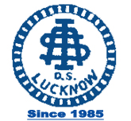
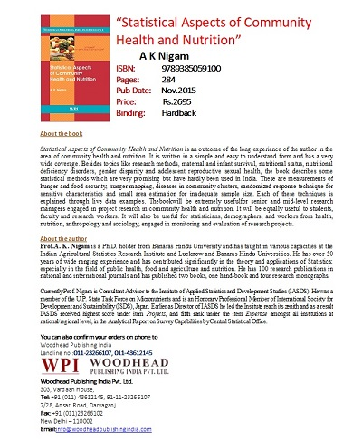

Institute of Applied Statistics & Development Studies [I A S D S]
( Registered under Societies’ Registration Act. 1860, Registration no. 3458/85-86 dated 26.10.1985 )

|  |
Institute of Applied Statistics & Development Studies [I A S D S]( Registered under Societies’ Registration Act. 1860, Registration no. 3458/85-86 dated 26.10.1985 ) |
||||||
|---|---|---|---|---|---|---|---|
| HOME | ABOUT US | MEMBERS | INCUMBENCY | OUR WORK | GALLERY | CONTACT US | |
|
| |||||||

FOUNDER |
||
 |
Professor Anadi Ranjan Roy (1920-1990) took M.Sc.
Degree in Pure Mathematics in 1942 and in Statistics
in 1944, both from Calcutta University. After completing
his postgraduate, he joined the Indian Council of Agricultural
Research and rose to the position of Professor of Statistics there.
During his stay at Calcutta, he hadthe privilege of being taught by
Professor P.C. Mahalanobis, Professor R.C.Bose,and Professor P.K. Bose
among others. Subsequently, he proceeded to USA for doctoraldegree from
Stanford University on a Fulbright Grant where he worked with several
stalwarts including Professor Charles Stein, Herman Chernoff, and Meyer
Girshick. His teachers and research associates/supervisors were highly
impressed by his research work and potentials. In 1959, he joined the
Department of Statistics, Lucknow University as Professor and Head and
continued to hold the position till his retirement in 1980.
|
LEGAL STATUS Registered: Under Societies Registration Act. 1860, Registration no. 3458/85-86, valid till 25.10.2025 PAN Card Details: AAATI0945C 12A: IASDS is registered under 12A of Income Tax - Registration No.AAATI0945CE20218 dated 23.09.2021 for Five Assessment year 2022-23 to 2026-27. 80 G Donation Exempted: IASDS is registered under 80G of Income Tax - Registration No.AAATI0945CF20190 dated 23.09.2021 for Five Assessment year 2022-23 to 2026-27. NITI AAYOG registration ID: UP/2012/0052417 DSIR: Recognized by DSIR vide letter no. 13/293/2016-TU-V dated 07/10/2016 |
| Late Prof. A.R. Roy Founder Director Member Secretary October 1985 to May 01, 1990se | LERN MORN | |
OUR PUBLICATION |
MEMORANDUM OF ASSOCIATION |
||
|---|---|---|---|
 |
 |  |
 |
 |
End line Assessment of "To Improve the reproductive health of adolescent girls and women in age grou on: 2023
Source of fund: Vatsalya, Lucknow
|
| OUR WORK IN VARIOUS STATES OF INDIA | STATES |
|---|---|
 |
New Delhi
Uttar Pradesh
Uttrakhand
Gujrat
Himachal Pradesh
Punjab
Haryana
Madhya Pradesh
Chhattisgarh
Bihar
Jharkhand
West Bengal
Assam
Shillong
Maharashtra
Karnataka
Odhisa
Rajasthan |
| Testimonials | WHY CHOOSE US? |
|---|---|
| There is something very special about you and it becomes almost impossible for anyone not to be influenced by it. I am sorry that I could not be there from the beginning but it was very important for me to listen to the proceedings. Values are fast fading and I was able to see it in you and thats enough for me to have liked every bit of the day. Congratulations!!! I will be away for 10 days but I will give you a call once I am back. | Strives to generate statistical thinking and synthesize statistical sciences among other sciences in organizations engaged in development research so as to emerge with sound knowledge of implementable recommendations. Endeavors in capacity building of such organizations by advising them to use modern and appropriate statistical tools for evidence based, scalable and replicable outcomes. Conducts research studies, in-service training programs, provides consultancy, organises workshops on themes of global importance for other research organizations. Proves its merit by successfully intertwining statistical sciences in diversified areas like Primary Education, Agriculture & Rural Development, Health, Nutrition, HIV/AIDS, Urban Infrastructure Development including Water supply, Sanitation and Drainage, Waste Management, Hygiene and Socio-economic aspects. |